Carrington Multifamily is the most extensively documented of Rachel's models, with seventeen compositions that trace light across rooms as the day shifts, revealing a space of exceptional material depth and quiet compositional intelligence.
THE BRIEF
The mandate for Carrington Multifamily was ambitious: produce a model unit with the visual richness of a high-end editorial shoot while maintaining livability as the primary design driver. Every angle had to reward the camera and the body in equal measure.
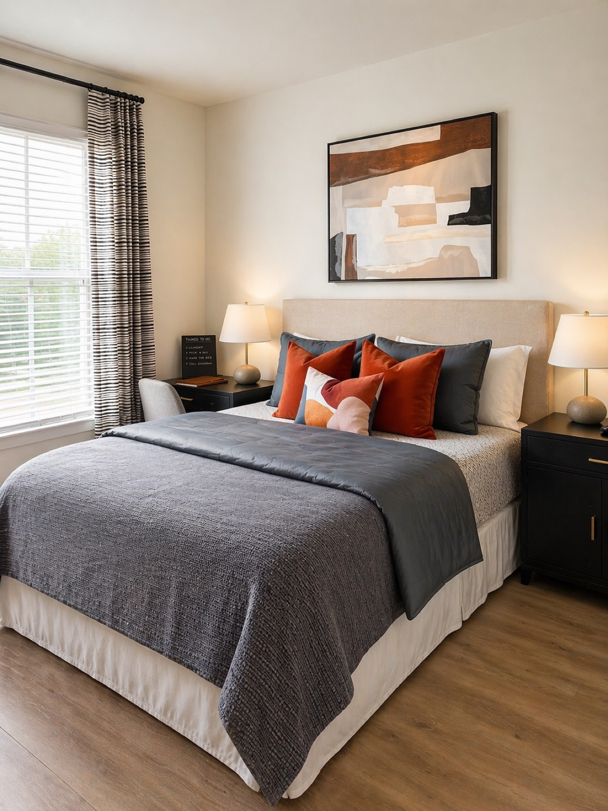
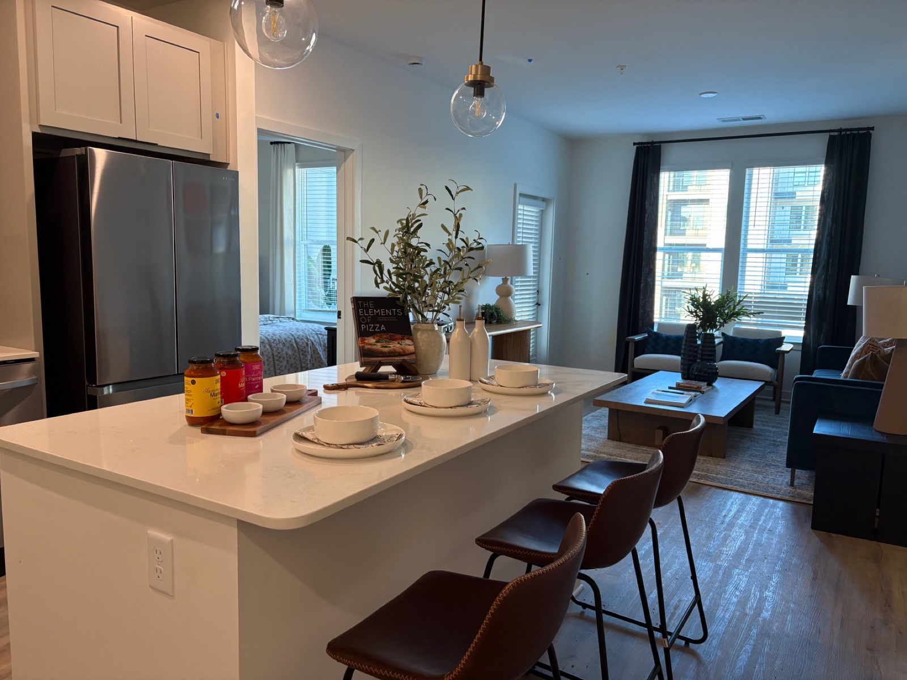
DESIGN DECISIONS
The material palette prioritises texture over colour: honed stone, brushed brass, aged linen, and hand-plastered walls create a layered surface story that the camera and the eye can explore endlessly. Colour is introduced sparingly through art, soft furnishings, and carefully placed objects.
The floor plan was treated as a sequence of experiences rather than a collection of rooms. Each threshold is designed as a moment of transition that builds anticipation for what lies beyond.
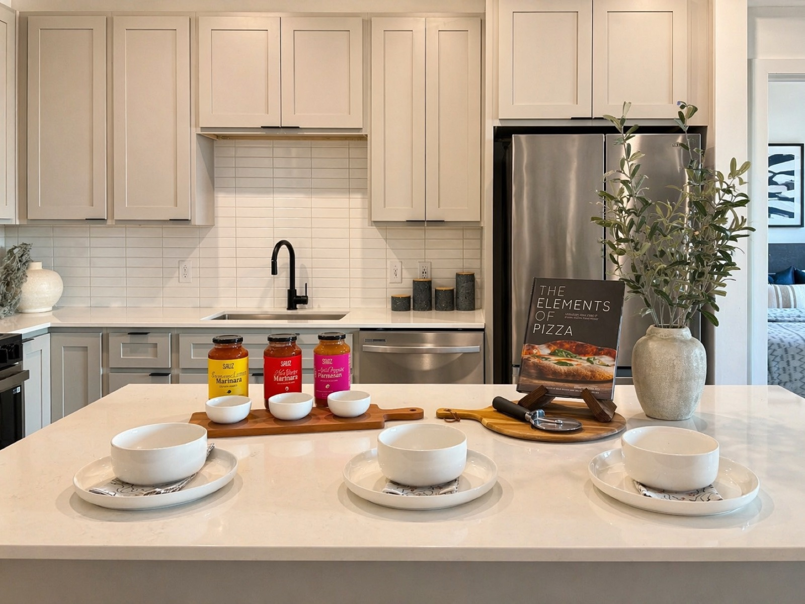

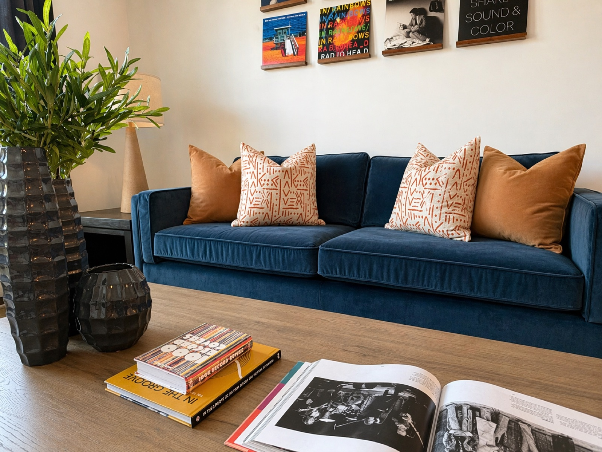
LIGHT & ATMOSPHERE
Seventeen angles don't happen by accident. The photography schedule was planned around light quality at different times of day, capturing the space as it genuinely shifts. Morning light renders the stone floors cool and clean; afternoon turns the brass warm and golden; evening layers everything in amber.

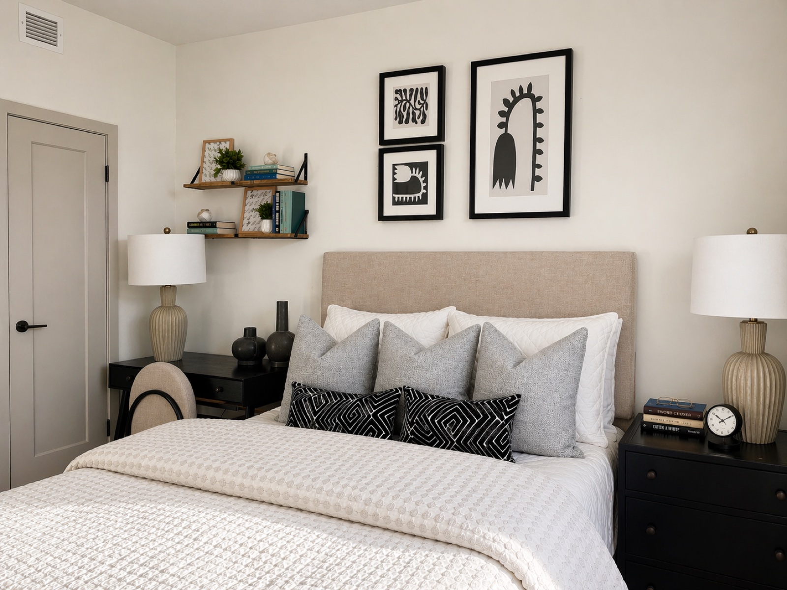
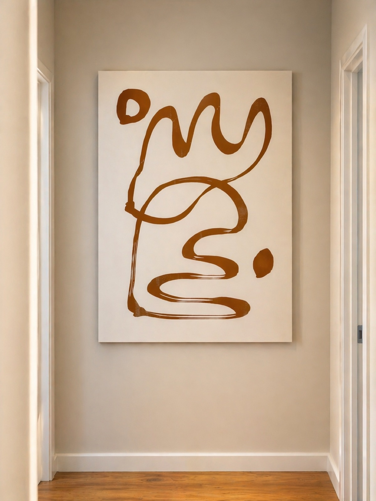
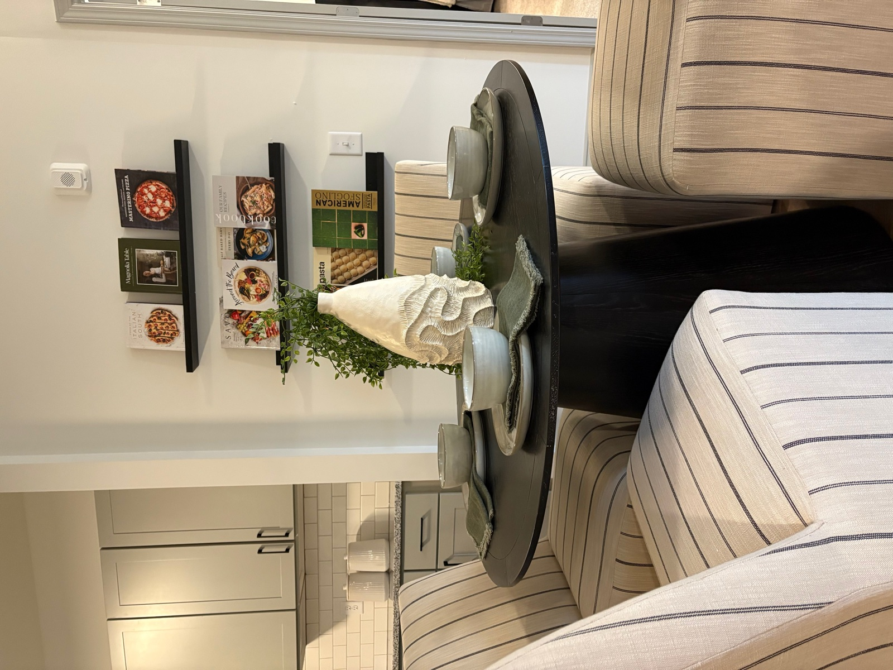
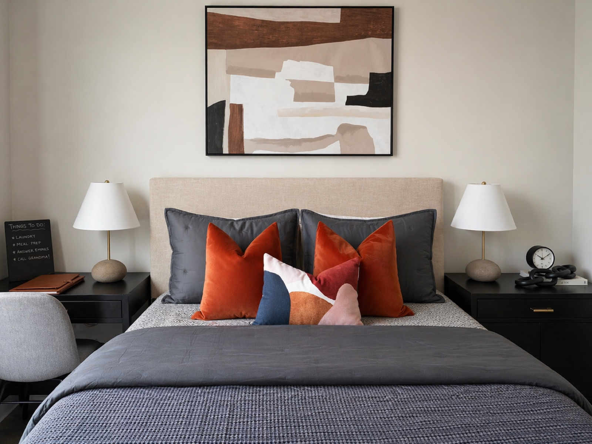

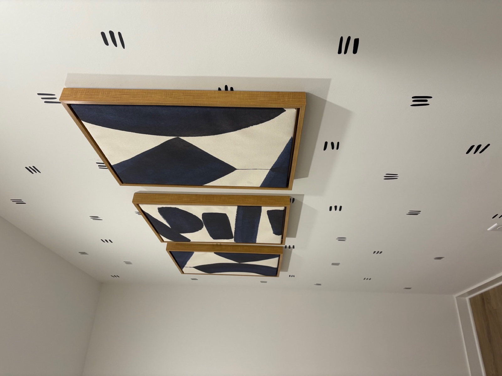
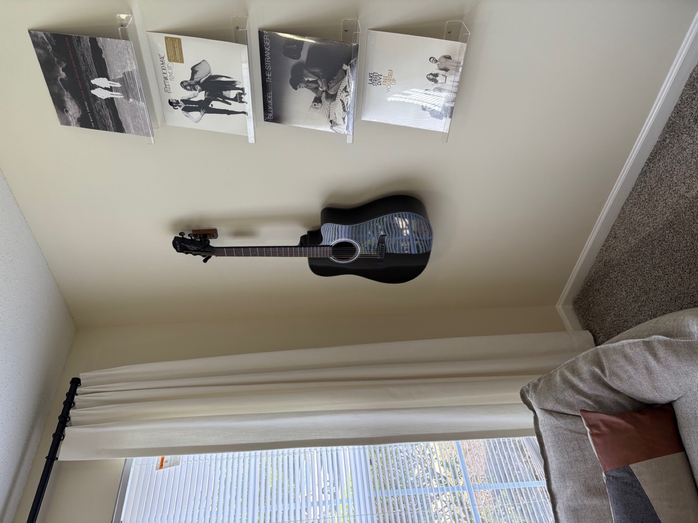
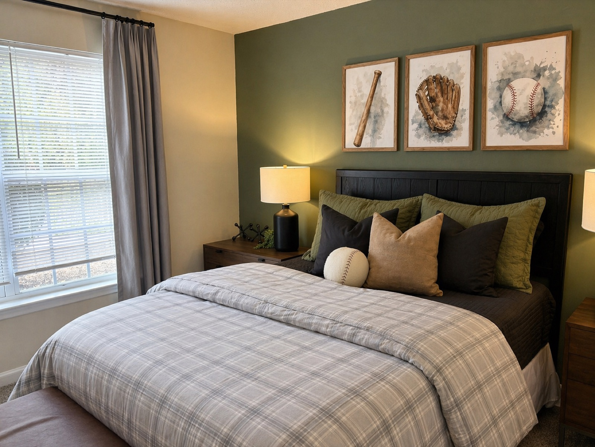